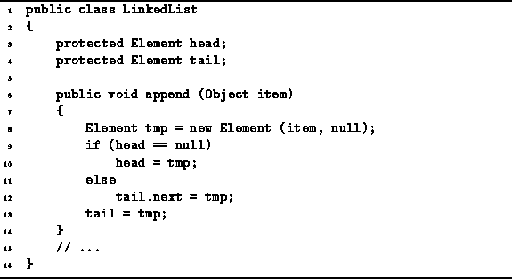

Data Structures and Algorithms
with Object-Oriented Design Patterns in Java
Data Structures and Algorithms
with Object-Oriented Design Patterns in Java
The append method,
the definition of which is given in Program  ,
adds a new LinkedList.Element at the tail-end of the list.
The appended element becomes the new tail of the list.
,
adds a new LinkedList.Element at the tail-end of the list.
The appended element becomes the new tail of the list.

Program: LinkedList class append method.
The append method first allocates a new LinkedList.Element. Its datum field is initialized with the value to be appended, and the next field is set to null. If the list is initially empty, both head and tail refer to the new element. Otherwise, the new element is appended to the existing list, and the just tail pointer is updated.
The running time analysis of the append method is essentially the same as for prepend. I.e, the running time is O(1).
 Copyright © 1998 by Bruno R. Preiss, P.Eng. All rights reserved.
Copyright © 1998 by Bruno R. Preiss, P.Eng. All rights reserved.